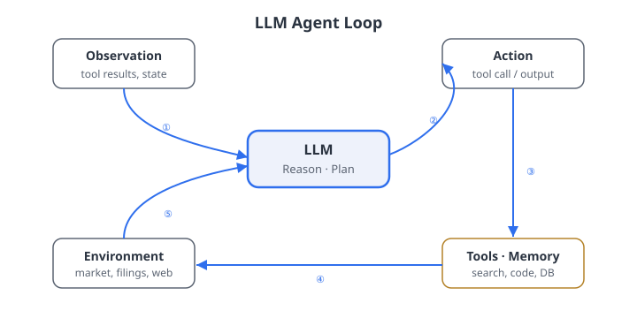

Governance — production constraints, HITL, audit trails, and adversarial risks.
the bigger picture
A plain LLM is a brilliant intern who never leaves the chair. An agent gives that
intern hands: it can pull the 10-K, run the DCF, check compliance, and hand you a draft —
while logging every step so you can audit it.
01
From language models to agents
Why a model that only predicts the next word can't do an analyst's job — and what fixes it.
The limitation
Why a brilliant model that just sits there isn't enough
A plain language model turns a prompt into words and stops. It has no memory between calls and can't reach out into the world — so real analyst work breaks it.
A portfolio manager asks
"Given Apple's last earnings call and the most recent 10-K, what are the key risks to
revenue growth vs. two years ago?"
Documents don't fit — a call plus a 10-K can overflow what the model can read at once (frontier-class: 128,000+ tokens ≈ 100 pages)
Cross-referencing two sources is unreliable when both are crammed into one prompt
The follow-up restarts from scratch — "now compare to Microsoft" forgets everything
The fix
An agent is the same model, wrapped in a loop
Take that one-shot oracle and put it inside a cycle: look at the situation, decide what to do, do it, read the result, repeat. That loop is what makes the LLM an autonomous agent.
Autonomous Agent (definition)
A computational system that perceives observations from an environment,
maintains internal state, selects actions from an action
space, and executes those actions in pursuit of a goal. When the reasoning
module is an LLM, we call it an LLM-based agent.
the move that follows
Everything in this lecture is a piece of that loop: where memory lives, what actions are allowed,
who supervises, and how you prove afterward what happened.
The loop, named
Perceive, reason, act — then do it again
Strip the jargon and an agent repeats three moves: take in new information, decide on an action, and let the world respond. The diagram below shows the cycle.

Figure. The perceive–reason–act loop. The model reads an observation, reasons about what to do, and issues an action; the environment (tools, APIs, databases) responds with the next observation. Memory threads through every step.
Source: Course materials, Chapter 4.
The loop, unpacked
What each piece of the loop means in an LLM agent
Policy, memory, action, and observation each map directly onto things you can see and control in code.
Inside the loop
Policy = the language model (decides the next action)
Memory = the structured prompt — history, tool results, system instructions
Action = a text reply, a tool call, or "I'm done"
Observation = a tool output, a retrieved document, a user message
the key bottleneck
Memory is capped by the context window — roughly 100 pages for a frontier-class model.
A company's full filing history simply does not fit, which is why we need the memory and
retrieval tricks coming up.
Finance PRA example
Earnings-call monitor: observation = a new transcript sentence; actions = Flag(reason),
Query(database), or Summarise (terminates); memory = accumulated transcript + flagged items.
ReAct
Think out loud, then act — and the act grounds the thought
ReAct (Yao et al., 2022) interleaves a written thought with a real action. The model says what it intends, takes a step, reads the result, and continues from facts rather than guesses.
Why explicit reasoning helps
Want the closing price of AAPL on a date?
Chain-of-thought only: the model approximates the number from training patterns — unreliable (Wei et al., 2022)
ReAct: it calls market_data_api(date=t) and gets the exact value
Downstream reasoning then uses the precise number, not a hallucinated one.
practical result
ReAct cuts hallucination by anchoring each reasoning step to a tool-call observation —
the model checks reality instead of inventing it.
ReAct in action
Three tool calls replace one risky guess
Query: "What was Tesla's stated liquidity-risk policy in its most recent 10-K?" Watch the agent walk to the answer instead of inventing it.
Step
What happens
Thought 1
I need Tesla's most recent 10-K. Use the EDGAR search tool.
I have the relevant section. Extract the stated policy.
Action 3
Finish(structured summary of liquidity policy)
the point
Three grounded tool-call steps replace one hallucination-prone generation step.
Beyond ReAct
Agents that explore options and learn from their mistakes
Two upgrades make agents smarter without retraining: search several plans before committing, and write yourself a note about what went wrong.
Tree-of-Thought (ToT) (Yao et al., 2023) — lays out reasoning as a search tree and evaluates several candidate paths before choosing one
Reflexion (Shinn et al., 2023) — adds a spoken self-critique after each attempt, carried into the next try without fine-tuning
Finance example
An agent picking comparable companies might write itself the lesson:
"I should filter by market cap and GICS sub-industry simultaneously, not sequentially."
That lesson carries forward — verbal self-improvement substitutes for expensive fine-tuning.
02
Memory
What an agent keeps in its head, what it looks up, and why a lookup error can become a compliance event.
The memory tiers
What to hold in your head vs. what to look up
Agents use three kinds of memory, just like a person: what's in front of you now, a library you search by meaning, and a filing cabinet you look up by exact key.
Type
Size
Latency
Persistence
In-context
≤ context window
≈ 0
Session only
Retrieval-augmented
Unbounded
10–100 ms
Persistent
Long-term (DB)
Unbounded
1–10 ms
Persistent
In-context — the current conversation and recent tool results; instant, but gone at session end
Retrieval-augmented — a vector database searched by meaning; good for semantic queries over 10,000 SEC filings
Long-term — a relational or graph DB for exact lookups: entity metadata, fiscal calendar, analyst-revision history
the design move
Financial agents layer all three: in-context for the active session, retrieval for the document corpus, structured DB for entity metadata. Route each information need to the right tier.
When lookup goes wrong
A bad retrieval poisons everything downstream
When an agent searches its library by meaning, it can miss the right document or grab the wrong one — and the reasoning built on top inherits the error.
Missed relevant doc → a hallucinated gap in the answer
Spurious retrieval → noise dragged into the reasoning
Both failure modes propagate into the generated answer
in finance, retrieval errors matter
A faithfulness failure in a compliance summary can be a regulatory violation. A faithfulness
score below 0.80–0.90 (commonly ~0.85) triggers human review rather than
automated publication.
03
Tool use and function calling
Giving the model a calculator, a database, and an API — safely, with an action space you control.
The tool paradigm
A tool is a labelled action with a strict contract
Each tool is just three things: a name, a contract for its inputs and outputs, and the code that runs. The contract is what lets the model use it without guessing.
Name — a unique identifier
Schema — JSON Schema: what goes in, what comes out
Implementation — the function that does the work (or returns an error)
highest-leverage investment in reliability
Clear, precise field descriptions — units, valid ranges, edge-case behaviour. These descriptions
flow straight into the JSON Schema the model reads, so good prose here is good engineering.
How a tool call actually works
The model asks; a trusted environment acts
Crucially, the model never runs code itself. It emits a structured request, and a separate trusted environment executes it and hands back the result — which is what makes tool use auditable and safe to restrict.
Tools are declared in the system prompt as a JSON array
The model generates a structured tool-call message — function name + arguments
The execution environment dispatches the function and returns the result as a new message
The model continues reasoning with that result now in context
If the JSON is malformed, a validation error is returned as feedback — the agent regenerates with corrected arguments (Pydantic is widely used for this)
why this matters
The agent's action space is exactly the set of declared tools — nothing more. That separation
is the safety property: you can prove what an agent was capable of doing.
Models that learn to use tools
Toolformer and Gorilla: teaching the model when and which tool to call
Two key systems solved the hardest parts of tool use: knowing when a tool call is needed, and selecting the right one from thousands of options.
Toolformer (Schick et al., 2023)
Fine-tuned a language model to self-supervise tool-call placement within generated text.
Key insight: a tool call should be emitted only when it is likely to reduce perplexity
of subsequent tokens — formalising when to call a tool.
Gorilla (Patil et al., 2023)
Tackled which tool to call given a library of thousands of APIs. Fine-tuned on
(instruction, API call) pairs from API documentation. On large API libraries, Gorilla
outperforms GPT-4 with in-context demonstrations. Implication: specialised tool-calling
models or retrieval-augmented tool selection can outperform general-purpose LLMs at scale.
practical design
For large tool libraries, maintain a vector index of tool descriptions and retrieve only
the most semantically relevant tools for the active context — analogous to a Bloomberg
expert who reaches for the right function without mentally enumerating all 30,000.
A custom tool
Wrapping a DCF so the model can't misuse it
Define a tool with typed, described, range-checked inputs. The descriptions teach the model how to call it; the validation stops bad calls before they run.
from pydantic import BaseModel, Field
class DCFInput(BaseModel):
free_cash_flows: list[float] = Field(
description="Projected FCFs in USD millions, chronological"
)
wacc: float = Field(
description="WACC as a decimal (0.08 = 8%)", ge=0.0, le=1.0
)
terminal_growth_rate: float = Field(
description="Perpetual growth rate as a decimal", ge=0.0, le=0.15
)
Pydantic field descriptions propagate into the JSON Schema the model receives
Validation errors come back as structured feedback — the agent regenerates with corrected arguments
Safer than raw SQL: the action space is restricted to meaningful financial operations
When tools fail
An error is an observation, not a dead end
Real tools time out, hit rate limits, and return nothing. A production agent treats each failure as information and recovers in layers.
Innermost — retry with exponential back-off for transient failures (network timeouts, rate limiting)
Middle — read the error as an observation and try a different action: another endpoint, a relaxed date range, a decomposed query
Outermost — call RequestHumanHelp(description) rather than returning a made-up answer
never pass errors silently
A robust protocol always returns an informative Error(msg). The agent treats it as a
valid observation and generates a recovery action — silence is how hallucinations sneak in.
04
Orchestration and multi-agent systems
Reusable skills, cross-cutting hooks, file-based patterns, and a team of specialists instead of one overworked generalist.
Building blocks
Skills package the work; hooks watch it happen
Two abstractions keep agent systems manageable: a skill is a reusable sub-workflow, and a hook is a callback that fires on events without touching the core reasoning.
Skills
A named, parameterised sub-workflow that hides its own prompt engineering, tool selection, and
error handling. Examples: SummariseEarningsCall,
RetrieveRiskFactors, GenerateCompsTable.
A coordinator composes them in sequence without knowing their internals.
Hooks — financial examples
Audit hook — logs every tool call to an immutable trail (MiFID II)
Compliance hook — checks a proposed response before any Finish
Cost hook — tracks token usage; alerts on budget breach
why decouple
Hooks separate cross-cutting concerns — audit, compliance, cost — from the agent's core reasoning loop.
A compliance hook need not understand the task; it only needs to inspect the proposed output.
The file-based pattern
Agents, skills, and hooks as plain text — readable, diffable, auditable
Agentic coding assistants (like Claude Code) realise agents, skills, and hooks as plain-text markdown files under version control — every capability and guardrail is a tracked file a reviewer can read.
Three file types, three roles
Agent file — states a persona, allowed inputs, the task, and the single artifact it must write
Skill file — names an invocable procedure (/screen-filing) and lists ordered steps; skills can call other skills
Hook script — wired declaratively to a lifecycle event (e.g., PostToolUse); runs automatically, no agent in the loop
why this matters for regulated workflows
Agents are the who, skills are the how, hooks are the
automatic guardrails that run whether or not anyone remembers to ask.
The entire capability and control surface is inspectable from a git log.
practical note
Many such files carry YAML frontmatter (name, description) followed by a free-text body.
A hook wired to PostToolUse: Write|Edit with a compliance script turns a
policy ("notes must clear compliance") into an enforced, auditable step.
Many agents, one job
A team of specialists beats one generalist
Split a hard task across narrow specialists and route between them. Each agent does one thing well, and the decomposition itself reduces errors.
Equity-research delegation
Coordinator — decomposes the request, assembles the final output
production result
A first-draft research report in ≈ 4 minutes vs. 2 days
for a human team. Humans review the compliance flags and quant scenario assumptions.
Evidence: TradingAgents (Xiao et al., 2024)
Specialist LLM agents — fundamental, sentiment, technical analysts, traders with varied risk
profiles — debate market conditions before risk adjudication; yields superior cumulative
returns and Sharpe ratios vs. single-agent baselines over a 6-month live evaluation.
05
Retrieval-augmented generation in finance
Answering from your own 50,000-document library — keeping knowledge external, current, and auditable.
Why RAG
Don't memorise the library — look things up at query time
A large asset manager's research library has 50,000 documents. No context window holds it and no fine-tuning reliably memorises it. So retrieve the handful of relevant passages when the question arrives, and reason over those.
the bigger picture
RAG (Lewis et al., 2020) keeps knowledge external, current, and auditable — you can swap
in a new filing without retraining, and you can point to exactly which passages an answer came from.
Gao et al. (2024) survey the extension of RAG to domain-specific applications including finance.
The vector database
Semantic search at scale — finding meaning, not just keywords
A vector database stores document embeddings and answers "which documents have a similar meaning to this query?" in milliseconds — even over millions of documents.
The core algorithm: FAISS (Johnson et al., 2019)
Facebook AI Similarity Search implements several index types. For financial corpora up to
roughly one million vectors, IVF-HNSW (inverted file + hierarchical
navigable small worlds) delivers:
Query speed: under 10 ms
Recall: above 95% for top-10 retrieval
Metadata filtering is critical
Commercial VDBs (Pinecone, Weaviate, Chroma, Qdrant) add metadata filtering to FAISS-like
indexing. For finance: attach ticker, date, document type, section to each
vector. Query "Apple CFO supply chain" with a filter restricting to Apple documents —
cuts irrelevant retrievals substantially.
Deploying RAG
The cheap setup that wins — plus the filter that saves it
Most production RAG is deliberately simple: a frozen off-the-shelf retriever feeding a closed-source LLM through an API. The big reliability win is filtering by metadata first.
Dominant deployment (naive RAG)
Frozen bi-encoder retriever (a sentence transformer, e.g. FinBERT or text-embedding-3-large)
Closed-source LLM generator via API
Gives up end-to-end optimisation; dramatically cheaper to deploy
metadata filtering matters
A query for "Apple CFO supply chain" should be restricted to Apple documents, not all 50,000
documents in the index. Composite queries combining semantic similarity with metadata equality
constraints substantially reduce irrelevant retrievals.
Grading a RAG system
In finance, faithfulness comes before everything
The RAGAS framework (Es et al., 2023) scores a RAG pipeline on four axes. For regulated finance, they are not equally important — an unfaithful answer is a hallucinated claim presented to a client.
Metric
Definition
Faithfulness
Fraction of answer claims supported by the retrieved context
Answer Relevance
Semantic similarity between answer and query
Context Precision
Fraction of retrieved chunks relevant to the query
Context Recall
Fraction of ground-truth claims covered by the context
Faithfulness first. Unfaithful = hallucinated = a compliance failure with clients. Below 0.85 → block automated publication, trigger human review.
Context recall next. High faithfulness with low recall = accurate but incomplete — material disclosures may be omitted.
06
Finance applications
Earnings-call pipelines, reports, portfolio Q&A, trading signals, and filing search.
Application · earnings calls
Turning a call transcript into a structured, cited brief
An earnings-call agent runs a five-stage pipeline — from raw transcript to a structured summary where every claim cites the transcript. Total pipeline latency: 3.2 minutes for a 90-minute call.
Ingestion — transcript from a vendor API (Refinitiv, S&P Global) or EDGAR
Metric extraction — find numerical guidance; compare to prior guidance and consensus
Sentiment — a directional score per segment on a financially calibrated scale
Synthesis — a structured summary with transcript citations (including timestamp and speaker)
predictive evidence
Kim et al. (2024): GPT-4 fed anonymised financial statements predicts earnings direction at
accuracy that exceeds human analysts; trading strategies yield higher Sharpe ratios.
LopezLira & Tang (2023): zero-shot GPT-4 headline sentiment predicts short-term returns.
domain knowledge matters
General models misread finance: "margin compression was manageable" is a negative signal;
"exceptional inventory build" in consumer electronics is a negative signal.
FinGPT (Yang et al., 2023) and BloombergGPT (Wu et al., 2023) substantially reduce these errors.
Application · reports & filing Q&A
Describe verified data — never write from memory
The core principle of automated research: a data agent assembles verified numbers first, then a writer agent describes that package, citing every figure. Free-form "write a report about NVIDIA" produces hallucinated figures.
Report generation — fact grounding
Data agent assembles a verified data package (statements, market data, estimates)
Writer produces prose describing it, citing each figure by source
MiFID II substantiation requirements apply to algorithmically generated research too
Filing Q&A — citation wrapper
Every claim must carry a chunk citation
A verifier model (7B-parameter is sufficient) checks each claim against the cited chunk
Unsupported → [Claim not verified; human review required]
FinSage (Wang et al., 2025): multi-path retrieval + compliance re-ranking for FinanceBench
FinanceBench — it's hard (Zhang et al., 2024)
Even GPT-4-Turbo with retrieval incorrectly answers or refuses a large majority of questions over
publicly traded company filings. Production-grade financial RAG is genuinely difficult.
Application · portfolio research assistants
Natural-language analytics for the portfolio manager
A portfolio research assistant takes natural-language questions and answers them with precise computation — no bespoke code needed for each query.
"What is the current technology sector weight vs. the benchmark?"
Agent → calls get_factor_exposures → responds: "28.4% vs 27.8% in S&P 500
(60bps overweight). Note: today's intraday prices not incorporated — refresh after market close."
data-vintage transparency
An agent that silently answers about yesterday's close when the manager asks about today's positions
after a large trade introduces a serious misunderstanding risk. Agents must explicitly flag data vintage.
Application · trading signals from text
From Tetlock to GPT: richer, more nuanced signals than bag-of-words
LLM agents extend the long tradition of text-based signals by producing structured outputs — sector sentiment, management confidence, guidance revision direction, novelty relative to prior disclosures — rather than a single number.
Signal generation pipeline
News monitoring agent → triggers signal agent per document → structured JSON output:
signal staleness / adverse selection
By the time a news article is processed (typically 10–60 seconds for cloud inference),
HFT may have already incorporated the information. The practical value of LLM text signals
is at longer horizons (minutes to days), not ultra-low latency.
Practitioners must measure signal half-life and calibrate holding periods.
evidence
Tetlock (2007): text features predict returns. LopezLira & Tang (2023): zero-shot GPT-4
outperforms dictionary-based methods. Yang et al. (2023): fine-tuned open-source models achieve
comparable accuracy at lower inference cost. An et al. (2024) FinVerse integrates 600+ financial APIs
for complex quantitative tasks far beyond single-turn Q&A.
07
Governance and safety
Production constraints, human oversight matched to risk, tamper-evident audit trails, and defending against poisoned inputs.
Production constraints
Latency, cost, and reliability — the three constraints that matter in finance
A research prototype that takes two minutes to answer a question is fine. The same latency in a live trading workflow is not. Production deployment imposes three hard constraints simultaneously.
Managing latency
Caching — store results against a content hash; repeated queries cost only a cache lookup
Model tiering — GPT-5.6 Luna / Claude Haiku 4.5 for classification and extraction; larger models for synthesis and report generation
LLM generation budget: 50–70% of total allowed wall-clock time
Defensive architecture
Every external dependency — LLM API, market data vendor, vector DB — is treated as potentially
unavailable.
Circuit breakers — detect a consistently failing dependency and route around it
Rate limit management — request queuing with priority ordering
Graceful degradation — cached response, simpler fallback model, or human escalation
Human-in-the-loop
Match the level of human oversight to the stakes
Not every action needs a human signature. Pick the oversight pattern by how reversible and how consequential the action is. Ouyang et al. (2022) showed that human feedback is essential for aligning LLM outputs — in finance this applies to factual correctness, not just values.
A tamper-evident log of what the agent did — and why
Every action is recorded with a timestamp and full payload, and the records are chained so that altering any past entry breaks every later hash. The agent's own thoughts double as its explanation.
The audit trail records what the agent did
An explanation addresses why
For ReAct agents, the Thought steps are the explanation — a strong argument for agents that externalise reasoning in natural language
Regulatory requirements
MiFID II Article 16: record-keeping obligations for investment decisions
SEC Rule 17a-4: electronic records for broker-dealers
Both apply to algorithmically generated decisions that influence investment outcomes
Adversarial robustness
When a document tells your agent to misbehave
Prompt injection is malicious instructions hidden in tool outputs or retrieved documents that try to override the system prompt. Worse, the attacker need not touch your system at all (Perez et al., 2022; Greshake et al., 2023).
Indirect injection (Greshake et al., 2023)
An attacker controls a web page and embeds hidden instructions that execute inside any agent
that retrieves that page — the agent becomes a confused deputy, exercising elevated privileges on
behalf of the attacker.
Defence in depth — no single control is sufficient
Input sanitisation — strip instruction-like patterns from retrieved text
Privilege separation — trusted system prompt vs. untrusted retrieved docs processed in a sandboxed context
Invariant monitoring — a separate agent blocks actions that violate invariants ("never recommend companies not on the approved list")
Dual-key authorisation — consequential actions need human + agent confirmation; capability-based security for API keys
The regulatory horizon
AI governance for finance is arriving — build for it now
In 2023, a New York attorney was sanctioned for submitting a legal brief citing six non-existent cases generated by ChatGPT (Mata v. Avianca). In finance, the stakes are at least as high — and regulators are responding.
Regulatory developments
EU AI Act (2024) — AI systems in financial services classified as high-risk; conformity assessment, logging, and human oversight obligations
SEC proposed rules (2023) — disclosure of AI use in investment recommendations; fiduciary obligations on algorithmic advice
MiFID II best execution — must document reasoning chains for trading-related decisions in sufficient granularity to reconstruct them
structural concern (Kurshan et al., 2024)
Existing model-risk frameworks assume static, well-specified algorithms subject to one-time
validation. Multi-agent trading systems learn continuously, exchange latent signals, and exhibit
emergent behaviour — current frameworks are structurally inadequate.
A layered governance architecture (self-regulation + firm-level + regulator-hosted monitoring)
is needed.
Wrap-up
The agent stack — and where Lecture 5 goes
The stack we built
Capability
Key mechanism
Basic LLM
Prompt → token distribution (stateless)
Agent loop
Perceive–Reason–Act; ReAct interleaving
Extended memory
Vector DB (FAISS/HNSW); hybrid search; chunking
External tools
Function calling; Pydantic validation; Toolformer/Gorilla
Production constraints; HITL; audit trails; injection defences; regulation
connection to Chapter 5
Chapter 5 applies these architectures to business valuation — a task needing
document retrieval, numerical computation, structured synthesis, and human oversight: exactly the
stack developed here.
Key refs: Yao et al. (2022) · Shinn et al. (2023) ·
Lewis et al. (2020) · Greshake et al. (2023) · Kim et al. (2024) ·
Xiao et al. (2024) · Zhang et al. (2024) · Kurshan et al. (2024).
A
Appendix — extra & optional material
Orchestration frameworks, vector databases, hybrid search, learned sparse retrieval, and chunking strategies. Beyond the core lecture.
Appendix · frameworks
Pick the framework that fits the task and the audit trail
Three popular orchestration frameworks make different bets. For regulated finance, the deciding factor is often who logs the full conversation by default.
Framework
Design philosophy
Best for
Audit trail
LangChain (2022)
Composable chains (LCEL)
Diverse data sources
Explicit config needed
LlamaIndex (2022)
Data-intensive retrieval
Large document corpora
Explicit config needed
AutoGen (Wu et al., 2023)
Multi-agent conversation
Team-structured workflows
Full history by default
auditability
AutoGen serialises full conversation histories — a natural audit log satisfying MiFID II best-execution
documentation. For compliance-sensitive applications, the choice of framework should consider not
just task fit but also the audit trail requirements imposed by regulators.
Appendix · learned sparse retrieval
SPLADE: the best of both worlds — semantic meaning, sparse efficiency
Standard hybrid search combines a fixed dense embedder and fixed BM25. SPLADE goes further: it learns a sparse representation that captures meaning rather than just exact terms.
How SPLADE works
Applies a ReLU-log activation to masked language model (MLM) logits to produce a
sparse high-dimensional vector. The model learns to expand queries and documents
with semantically related terms — e.g., expanding "haircut" (financial: reduction in
collateral value) rather than its everyday sense.
why it matters for finance
Financial terminology is highly specialised. A SPLADE model fine-tuned on financial text can
learn that "haircut", "covenants", and "basis points" carry domain-specific meanings that
general-purpose embedding models encode poorly. Learned sparse retrieval may outperform both
BM25 and dense retrieval on benchmark tasks in specialised financial corpora.
Appendix · hybrid search
Meaning-search and keyword-search cover each other's gaps
Dense retrieval captures semantic similarity but fails on exact matches like CUSIP numbers or regulatory citations. Sparse keyword search nails those. Blend the two.
Higher α (favour dense) — QA over long financial documents; start around α ≈ 0.7
Reciprocal Rank Fusion (RRF) — avoids normalisation entirely: combines rank positions from each retrieval system with constant k = 60
Tune on a held-out validation set — the optimal α is task-specific
Appendix · chunking
How you slice a 200-page filing decides what you can find
A 10-K has hierarchical structure. Cutting it into fixed-size blocks severs meaning at arbitrary points — better to respect the document's own boundaries.
Fixed-size — L tokens with δ overlap; simple, ignores structure
Semantic — sentence/paragraph boundaries; EDGAR item structure for SEC filings provides natural top-level sections
Hierarchical — a multi-level index (document → section → paragraph); retrieve the section first, then the paragraph within it. Two-stage approach reduces context sent to the generator while preserving structure
Recommended for 10-Ks
Hierarchical: EDGAR item structure at the top level + sentence-boundary chunking within items
(max 512 tokens, 64-token overlap).
Apple 2023 10-K (170 pages): ~15 item chunks, ~300 paragraph chunks, 20–30 table chunks.
benchmark result
Typical recall for well-tuned hierarchical RAG on 10-K filings: 85–95% on
manually labelled evaluation sets. Fixed-size chunking consistently underperforms hierarchical
on downstream QA over long financial documents.